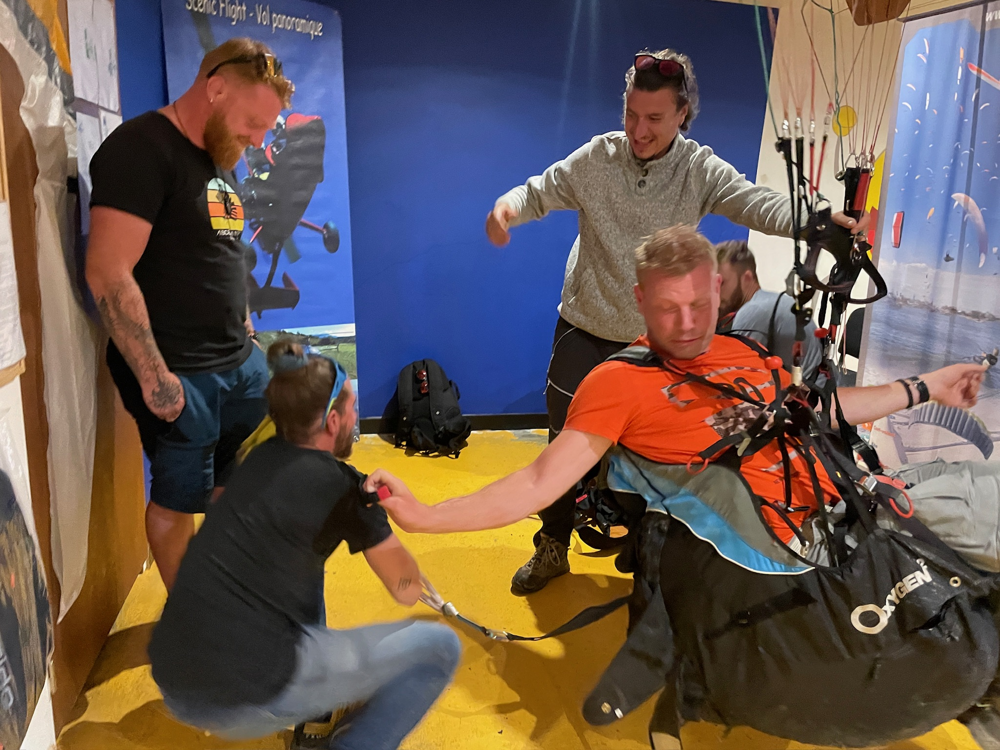

Contrôle Technique & Réglage de Voile

Un décalage de quelques millimètres seulement suffit à modifier profondément le comportement de votre aile (gonflage paresseux, tendance à parachuter en sortie d'oreilles ou de thermiques, dégradation des performances en transition). Une révision régulière est indispensable pour voler sereinement.
Nos 4 Piliers de Contrôle
- Mesure de porosité : Test de perméabilité à l'air (extrados/intrados) au porosimètre JDC pour évaluer le vieillissement de l'enduction.
- Résistance du tissu : Test de déchirure au Bettsomètre pour garantir l'intégrité de la structure textile sous charge.
- Contrôle du calage : Mesure laser millimétrique de l'intégralité du suspentage par rapport au plan théorique constructeur.
- Résistance mécanique : Essai de traction et rupture sur une suspente centrale (remplacée à l'identique à la fin).
Matériels Inspectés
- Voiles parapente de toutes marques, homologuées de la EN-A à la EN-D.
- Ailes mono-surface, mini-voiles et voiles de montagne.
- Ailes de speed flying, speed riding et parakite.
- Inspection et repliage périodique des parachutes de secours.
- Contrôle visuel des sellettes, maillons et mousquetons de sécurité.
Les Étapes de l'Inspection en Atelier
Inspection visuelle & Mesure de Porosité
Nous étalons la voile sur notre table rétroéclairée pour inspecter le tissu, les coutures, les cloisons internes et les suspentes. Nous réalisons ensuite plusieurs tests de porosité à l'aide d'un porosimètre JDC pour quantifier le débit d'air et déterminer le taux d'usure du tissu.
Mesure laser du calage & Résistance
Nous mettons le suspentage sous tension contrôlée (5 kg) et mesurons chaque ligne à l'aide d'un distancemètre laser précis relié à notre logiciel de calage. Nous effectuons également un test de résistance à la rupture sur une suspente cible pour garantir sa solidité mécanique.
Recalage & Remise du Rapport technique
Si un décalage est constaté (rétrécissement ou étirement), nous effectuons des boucles de réglage sur les élévateurs pour ramener l'aile dans son calage constructeur d'origine. Nous vous remettons une fiche d'atelier complète détaillant toutes les mesures et certifiant sa navigabilité.
Informations Pratiques & Prérequis
Pourquoi recaler une aile ?
Les suspentes en Dyneema ou en Kevlar se rétractent ou s'allongent sous l'effet de l'humidité et de la tension appliquée en vol. Généralement, les suspentes arrière (freins, suspentes C/D) se rétractent car elles subissent moins de charge. Cela augmente l'angle d'incidence de la voile, provoquant un comportement "lourd" au gonflage et un risque accru de parachutale dynamique en sortie d'oreilles. Le recalage redonne à l'aile sa sécurité et sa maniabilité originelles.
Actualités & Bons Cadeaux
Offrez un Bon Cadeau pour un vol inoubliable
Faites plaisir à vos proches en offrant un bon cadeau pour un baptême de l'air en Parapente. Valable 1 an.
Formations et Stages Saison 2026
Les inscriptions pour la saison de vol libre 2026 sont officiellement ouvertes chez Haut les Mains. Rejoignez-nous pour apprendre à voler en Provence.